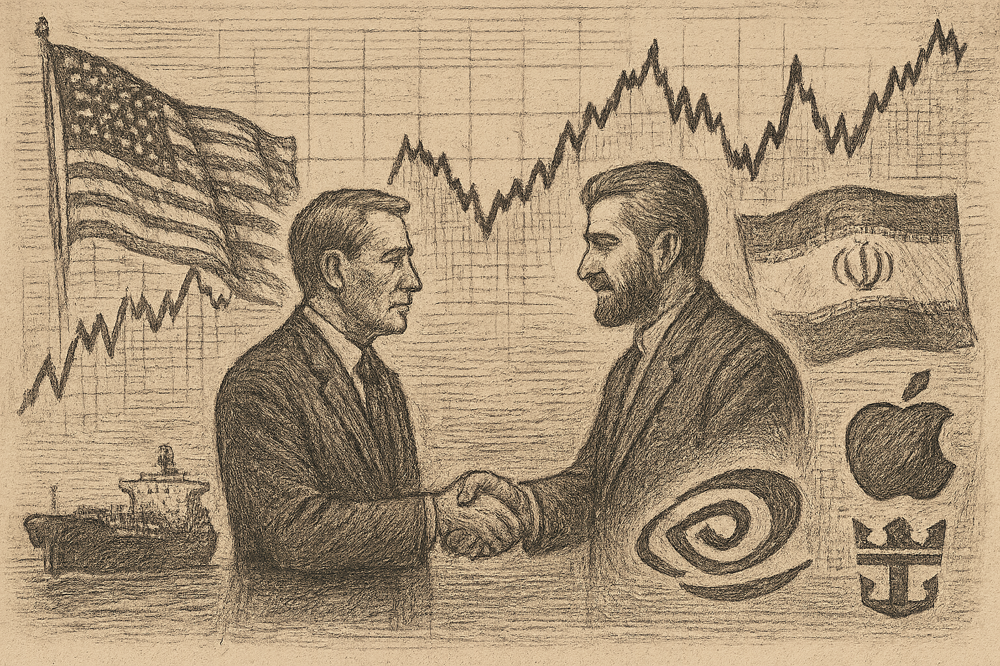

SPY
Current: $740.87Change: -1.22 (-0.16%)
Updated:
Source: yahoo_chartFreshness: fresh


Investor sentiment improves with reports of a ceasefire between the U.S. and Iran, coinciding with a critical earnings week for major tech firms.

Today's Headline: Market Volatility Rises as Iran Ceasefire Eases Tensions Ahead of Earnings
Setup: Investor sentiment improves with reports of a ceasefire between the U.S. and Iran, coinciding with a critical earnings week for major tech firms.
Primary Topic: Iran Ceasefire and Earnings Season
Specific Development: Reports indicate a ceasefire between the U.S. and Iran, reducing geopolitical tensions and boosting market sentiment ahead of significant earnings announcements.
Why Today Is Different: The combination of easing geopolitical tensions and a busy earnings week creates a unique environment for investors, potentially leading to increased market activity.
Secondary Topics: Earnings Reports; Market Sentiment; Geopolitical Developments
Tone: cautious optimism
Sectors: Technology; Energy
Companies: NVIDIA; Apple; Royal Caribbean
Commodities: Oil
Countries Or Regions: United States; Iran
Macro Themes: Earnings Season; Geopolitical Stability
Why This Story: Understanding the interplay between geopolitical events and corporate earnings is crucial for navigating current market volatility.
Why This Matters: The easing of geopolitical tensions can lead to a more favorable environment for earnings reports, impacting market sentiment positively.

- What happened overnight: Major indices faced pressure as Tesla and Alphabet reported disappointing earnings, contributing to a sell-off in tech stocks.
- What changed materially: Oil prices surged, impacting energy stocks and overall market sentiment.
- Market risk: elevated due to dual pressures from earnings misses and rising oil prices.
- Macro regime: defensive rotation with heightened caution.
Why This Matters: Understanding the interplay between earnings reports and commodity prices is crucial for navigating current market volatility.


- WOPR learning pipeline: Collecting samples
- Candidates evaluated 24h: 0
- Current gate: Evidence
- Notification ledger events in 24h: 2
- Pending orders created/canceled/filled/expired: 0/0/0/0
- Pending lifecycle interpretation: Pending-order cancellations have trackable reasons and no obvious rapid churn pattern.
- Portfolio risk: Label: High / Score: 100.0
- Latest intelligence gap report: intelligence_gap_report_2026-07-26.pdf
Why This Matters: The active gate is Evidence, so the key question is why candidates are stopping before approval, not how to force trades.

- Sentinel role: infrastructure and operational status only.
- State: ONLINE
- Last successful validation: unknown
- Payloads accepted/rejected: unknown/unknown
- Node health score: 100
Why This Matters: Sentinel is ONLINE, so Joshua should use its context only to the extent the latest accepted pulse is fresh and authenticated.

Joshua currently favors DELL because it is the highest-ranked available internal opportunity from Portfolio Intelligence.
Candidate confidence: 78.6
Portfolio risk: Label: High / Score: 100.0
Supporting evidence: Prediction evidence: FLAT 0.25% at 65 confidence. / WOPR history: 21847 scored sample(s), 81.8% win rate. / DELL is a strong standalone trade, but it increases portfolio concentration. / Next high-impact macro event: Advance Economic Indicators Report (International Trade, Retail, & Wholesale) at 2026-07-28T12:30:00+00:00.
Contradicting evidence: Concentration risk score is 55.8. / Breadth contradiction: weakening (43.3/100).
Missing evidence: Canonical symbol-specific price context is unavailable in the core snapshot. / No canonical symbol-specific material event is linked.
Invalidation conditions: Candidate confidence or portfolio-fit evidence deteriorates materially.
Why it matters: DELL is an observation-only review target, not an instruction; Joshua should compare its evidence stack against market context and recent gate failures.
Why This Matters: A top setup earns attention, not automatic allocation; the brief should help Joshua decide what evidence is missing.

- How should Joshua adjust its investment strategy in light of Tesla's earnings miss?
- What implications do rising oil prices have for inflation and consumer spending?
- How can Joshua leverage the current market volatility to identify new opportunities?
- What sectors are likely to be most affected by the combination of Tesla's performance and oil price increases?
- How should Joshua assess the risk of portfolio concentration given the current market conditions?

The market is reacting to a combination of earnings misses and geopolitical developments, with a notable focus on the tech sector's performance. The ceasefire between the U.S. and Iran may provide a temporary boost to sentiment, but underlying economic concerns remain.

Reports of a ceasefire between the U.S. and Iran have emerged, contrasting with previous fears of escalating conflict.

The shift in geopolitical sentiment provides a more optimistic backdrop for upcoming earnings, influencing market expectations.
No new warnings; however, the market remains sensitive to geopolitical developments.

Joshua's useful question today is whether the new top setup won on better evidence or merely on weaker competition.

| Can trigger trade | no |
| Can modify trade rules | no |
| Can add watch items | yes |
| Can add review questions | yes |
| Can adjust confidence notes | yes |
| Input policy | external_intelligence_plus_sanitized_internal_observations |
| External policy | The Editor-in-Chief synthesizes current world/market context where available and labels unknowns; provider/model provenance remains separate. |
| Internal policy | Joshua/WOPR/Sentinel facts are supplied as sanitized observation-only summaries. |
| Editorial model | gpt-4o-mini |
- Selected by a deterministic daily rotation through symbols already present in the persisted Chronicle snapshot.
- Related event on the canonical wire: Royal Caribbean (RCL) Q2 Earnings Report Preview: What To Look For
- Yemen teeters towards renewed war in shadow of Iran conflict - Reuters
- Desk: geopolitical; source: Reuters; linked symbols: none recorded.
- Published: 7/24/26 09:47 MST.
- High-impact watch: Advance Economic Indicators Report (International Trade, Retail, & Wholesale) - 7/28/26 05:30 MST.
- Affected assets: US equities, Treasuries, USD; source: census_release_schedule.
- UUUU earnings: August 5, 2026, time unknown.
- LINK earnings: August 6, 2026, time unknown.
- QBTS earnings: August 6, 2026, time unknown.
- Health Care: 2.90% session performance; source: persisted sector ledger.
- Materials: 2.53% session performance; source: persisted sector ledger.
- Utilities: 2.51% session performance; source: persisted sector ledger.
- VIX: 7.39% recorded move; price: 18.31.
- Session: regular; catalyst status: possible; source: yahoo_chart.
- Pending order lifecycle; why it matters: Pending-order cancellations have trackable reasons and no obvious rapid churn pattern.
- State: weakening; score: 43.30/100; advance/decline ratio: 0.68.
- Above 50-day average: 57.10%; sample: 119; provider: sentinel_sampled_breadth.
- Decision outcomes evaluated: 0; currently untestable: 23.
- Warning review: still watching 2, unconfirmed 1; confidence calibration: insufficient_sample.
- Recorded limitation: compatible evaluation prices were unavailable for BTC, ENB, SOL, HAL.
- Current macro regime: defensive_rotation; change probability: unavailable.
- Risk dashboard: cautious (57/100); breadth: weakening; sentiment: neutral.
- Scenario board only - a current-state observation, not a forecast or execution instruction.

- Created CAN SLIM and founded Investor's Business Daily, combining fundamental growth research with price-and-volume analysis.
- Published quotation: "The whole secret to winning in the stock market is to lose the least amount possible when you're not right."
- Published framework: Seek leading companies with strong current and annual growth, novel products or conditions, institutional accumulation, and favorable price-volume action; enter from sound bases and cut losses quickly.
- Committee lens: O'Neil adds institutional accumulation, market regime, and price-volume confirmation to Joshua's evidence set while demanding explicit invalidation when a breakout fails.
- Public philosophy profile only; no participation, endorsement, or current recommendation is implied.
- How should Joshua assess the risk of portfolio concentration given the current market conditions?
- DELL: Canonical symbol-specific price context is unavailable in the core snapshot.
- DELL: No canonical symbol-specific material event is linked.
- Capture compatible canonical evaluation prices so yesterday's decisions can be scored instead of marked untestable.
- Attach the missing DELL evidence before the next committee review.
- How should Joshua adjust its investment strategy in light of Tesla's earnings miss?
- What implications do rising oil prices have for inflation and consumer spending?
- How can Joshua leverage the current market volatility to identify new opportunities?
- What sectors are likely to be most affected by the combination of Tesla's performance and oil price increases?
- Evidence agenda: DELL - Canonical symbol-specific price context is unavailable in the core snapshot.
- Proposed review: Sentinel infrastructure state ONLINE; why it matters: Operational freshness affects how much Joshua can trust external/context observations.
- Proposed review: WOPR pipeline Collecting samples; why it matters: The active gate shows whether today's constraint is opportunity count, evidence quality, or calibration.
- Canonical instruments reviewed: 24; delayed 3, fresh 18, stale 3.
- Leading sources: yahoo_chart (21), treasury_official_yield_curve (3).
- Snapshot recorded: 7/27/26 07:11 MST.
Market Volatility Rises as Iran Ceasefire Eases Tensions Ahead of Earnings
Storm meter: Elevated
Joshua currently favors DELL because it is the highest-ranked available internal opportunity from Portfolio Intelligence.
Candidate confidence: 78.6
Portfolio risk: Label: High / Score: 100.0
Supporting evidence: Prediction evidence: FLAT 0.25% at 65 confidence
Observation mode: observation_only
Watch: Pending order lifecycle; why it matters: Pending-order cancellations have trackable reasons and no obvious rapid churn pattern.
Question: How should Joshua adjust its investment strategy in light of Tesla's earnings miss?